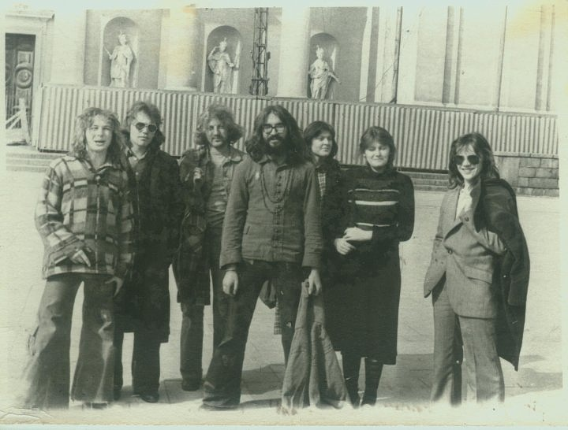
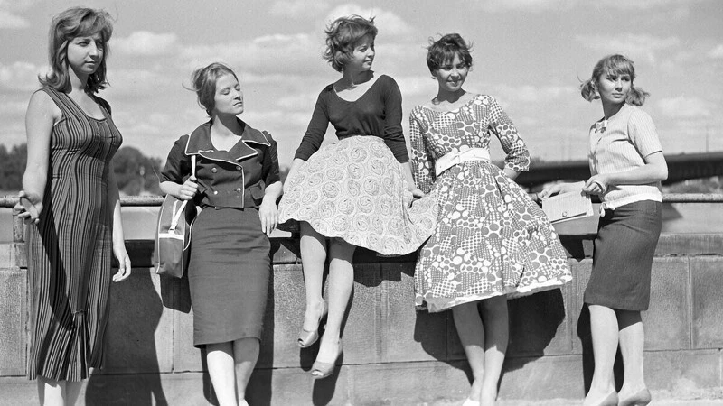
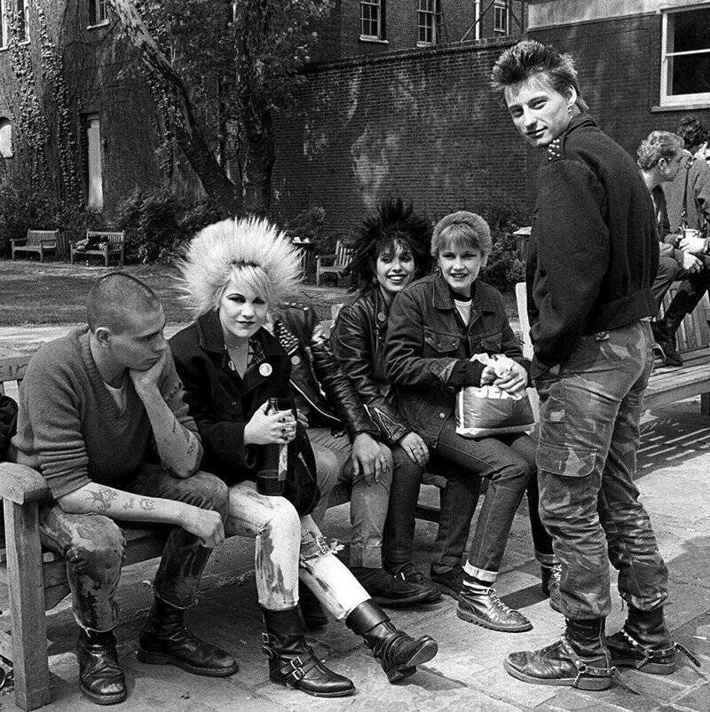
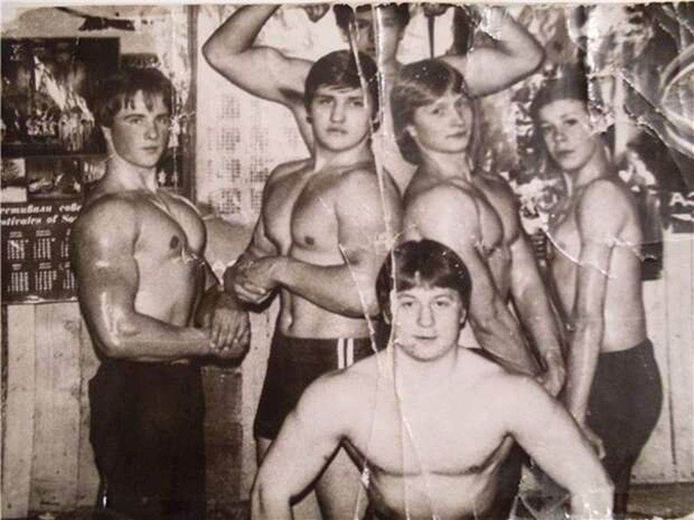
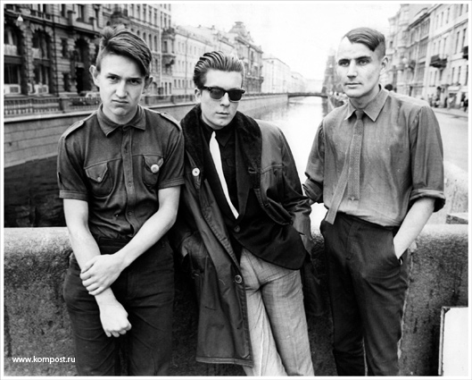

Ещё с глубокой древности известны различные объединения людей с
одним типом поведения или с общими взглядами на те или иные
вещи: природу, искусство, мироустройство. Людям всегда было
свойственно стремление к объединению.

В дореволюционной России насчитывались сотни различных
обществ, созданных по различным признакам на основе
добровольного участия. Существовали рабочие кружки, которые
были созданы по инициативе самих рабочих, что ярко
свидетельствовало об их стремлении удовлетворять свои культурные
и социальные вопросы.

Бурное развитие различных общественных объединений совпадает с
периодами расширения демократии: так, например, в годы
“хрущевской оттепели” были созданы такие общественные
организации, как Комитет молодежных организаций СССР,
Комитет советских женщин и другие.

Неформальные молодежные движения стали зарождаться ещё в
конце 1940-х годов, в условиях разрухи и социальных перемен.
Во многом этому способствовало культурное влияние Запада,
от которого Советский Союз не смог полностью изолироваться.

В 1980-е годы на волне перестройки и гласности субкультуры
в СССР пережили расцвет. Молодежь уже более открыто выражала
свое недовольство советской системой. Неформалы стали
символом перемен и свободы.